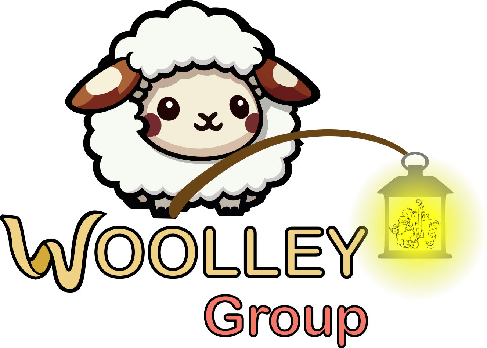
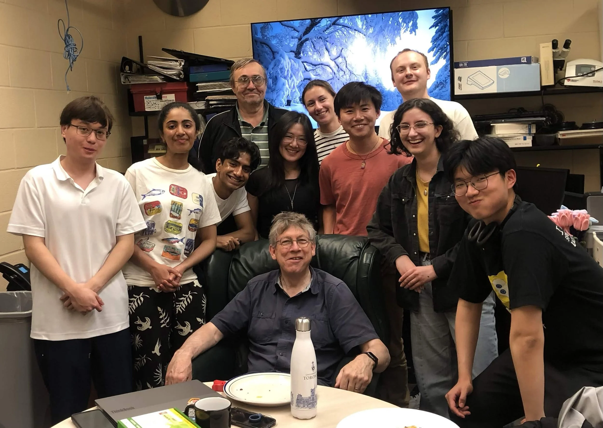

Protein Engineering
We engineer photoswitchable proteins into optogenetic tools for cell and neurobiology, gaining insight into protein structure and dynamics along the way.
Learn more →We design small molecules, peptides, and proteins that can be switched on and off with light — from UV to far-red.

We build light-responsive tools at two scales — engineering whole proteins, and designing the small molecules that switch them.
We engineer photoswitchable proteins into optogenetic tools for cell and neurobiology, gaining insight into protein structure and dynamics along the way.
Learn more →Bioactive small molecules that respond to light — controllable drugs and molecular probes built on azobenzene color tuning, acylhydrazone photochemistry, and in vivo applications.
Learn more →The Department of Chemistry offers outstanding facilities, expert support staff, and a vibrant research community in the heart of Toronto — one of the world's most diverse cities.
A network of resources supports our people:
Different photoswitches respond to different colors of light. Tuning that response — pushing toward red and near-IR for better tissue penetration — is a thread running through everything we do.
The Woolley Lab — seen here in the group room with (mostly eaten) pizza.

Meet the team →